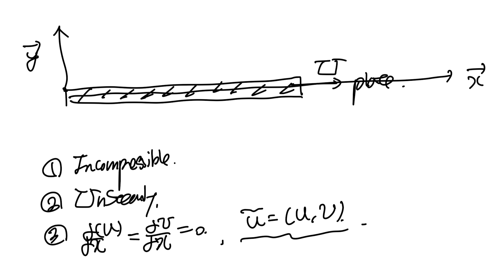

Ch4 Laminar flow - Stoke's First Theorem
어떠한 horizontal 판이 있다고
가정해보자.
그 위를 유체가 속도 = U, +x방향으로 흐른다.
하지만, 유체가 고체와 만나는 면에서는
no-slip boudnary condition으로
속도 = 0 . 일 것이다.

y방향으로 속도의 gradient가 생성되므로,
유체의 점성으로 인한 모멘텀 손실이 있을 것이다.
하지만, y=0 에서 y가 증가함과 동시에,
속도는 증가하며 다시 원래 상태의 U로 돌아갈 것이다.
이 상황에서, 우리는 boundary layer
thickness 어떻게구할 수 있을까?
(심지어 시간에 따라서 변화는 상황으로 가정하며,)
이를 역발상으로 해결한 이론이 바로
Stokes' 1st theoerm이다.

반대로, 정지해있는 유체 안에
밑의 판을 U의 속도로 움직이고 유체의 속도장,
boundary layer을 구한 것이다.
상황을 간단하게 2D좌표계로 표현하고,
가정을 추가해주면 다음과 같다.

핵심은 Unsteady flow라는 것이
이전 Laminar flow 분석과
가장 큰 치명적인 차별점이다.
du/dx = 0 이므로, 연속방정식에서 dv/dy = 0 이 쉽게 도출된다.
+ Boundary condition 으로 v = 0 임을 쉽게
알 수 있다.

이후 모멘텀 방정식에 가정들을 적용해보자.

여기서, flat plate가 무한히 길다고 가정하면,
x에 따라서 압력의 변화는 존재하지 않을 것이다.

따라서, 최종식은 다음과 같이 간단하며,
여기에
Boundary condition
inital condition(t = 0) 는 다음과 같다.

가지고 있는 식의 갯수가 충분하지 않으니,
Dimension analysis - Pi theorem을 이용하자
변수3개에, 차원2개 이므로
3개의 pi
즉, 3개의 dimensionless 수들로
식을 표현 할 수 있다.

따라서, 3개의 임의로 만든 무차원수로
식을 세우면 다음과 같다.
여기서 가장 큰 핵심은 U는 우리가
알고 있는 값이기 때문에
y/Ut 중 y,t만이 변수라는 것이다.

y,t는 이미 F()함수 다른 항에도 포함이 되어 있기 때문에,
결론적으로 두 무차원수는 dependent하다.
따라서, y/Ut를 제거해주자.
최종적으로 식을 다음과 같이 표현 할 수 있고,
편의상 함수안의 무차원수를 η 로 표기하자

이제, 우리가 원래 풀기로 하였던,
모멘텀 방정식에 새로운 u = U * F(
η
). 형태로 표현해보자.

계산 전에, 에타 와 에타의 미분항을 정리해보자.

이제,
좌항 우항은 다음과 같이 표현가능하다.
(Chain rule이용)

신기하게도 PDE를 무차원수 η로 표현하였더니
η에 관한 ODE로 변신하였다.

ODE는 적분으로 다음과 같이 쉽게
풀 수 있다.

여기에 Boundary condition을 적용하여 계수들을 구하자.

여기서 가우스 적분을 이용하면, c1도 유도 가능하다.

최종적으로 계수들을 대입해주고,
아주 신기하게,
적분항은 정규분포 형태를 띄는
오차함수이다.

밑 그래프를 보면,
시간이 흐를수록 점성효과가 y방향으로
퍼지는 것을 알 수 있다.

진짜 신기한 것은
시간에 따라 변화하는 위체 y에 따른 속도를
무차원수 2개로
밑의 단하나의 그래프로 표현 할 수 있다는 것이다.

이렇게 여러가지의 변수들을
무차원수로 정리하여
PDE -> ODE로 만들어
도출한 해를
Similarity solution이라고 칭한다.